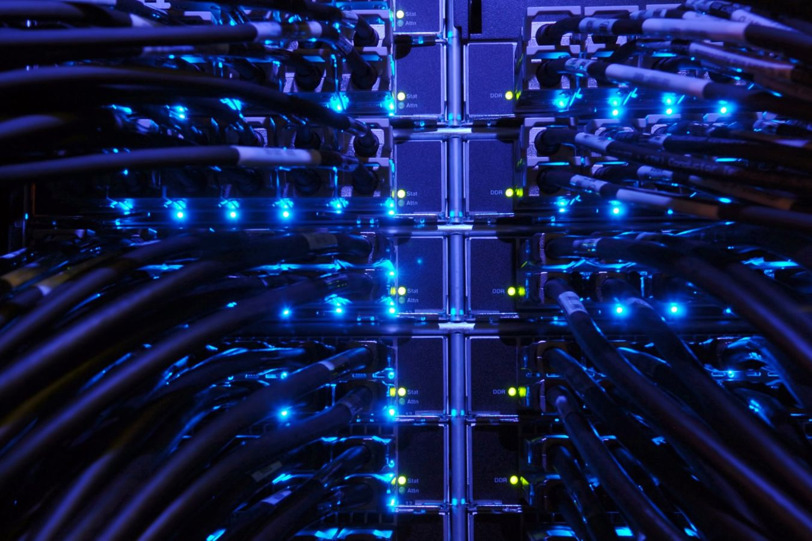
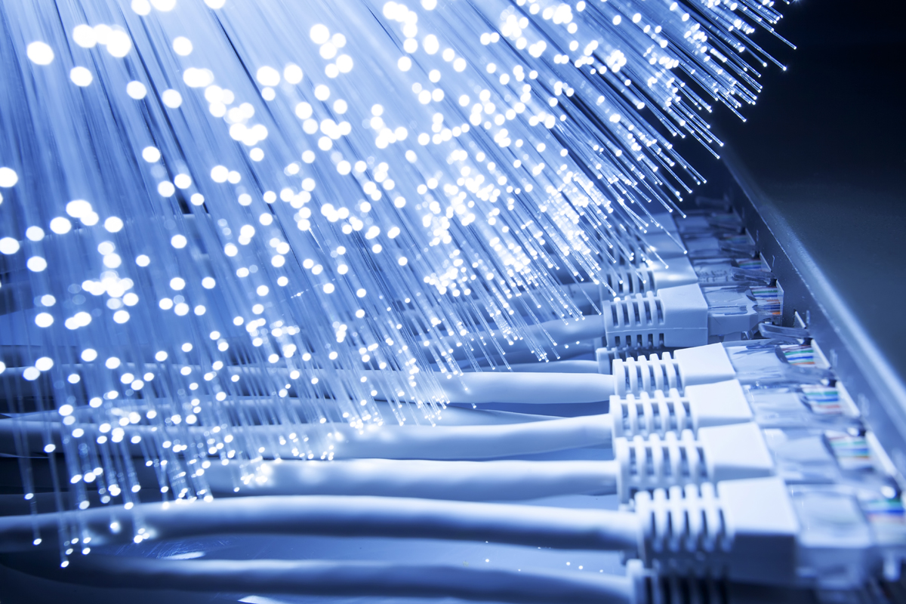

Компьютерные сети
Тренажёр №1
Этот тренажёр относится к лекции №1
Физический уровень
Тренажёр №2
Этот тренажёр относится к лекции №2

Канальный уровень
Тренажёр №3
Этот тренажёр относится к лекции №3

Сетевой уровень
Тренажёр №4
Этот тренажёр относится к лекции №4
Транспортный уровень
Тренажёр №5
Этот тренажёр относится к лекции №5